Module 9 Data Visualization II
We will continue working with the spotify data set we worked with last week. The objectives of this module are as follows: by the end of this module you will be able to …
Explore a large data frame to decide what part of the data you want to focus on
Create subsets of your original data frame
Create summarizations of your data based on different variables
Plot these summarizations
## Rows: 32,833
## Columns: 25
## $ track_id <chr> "6f807x0ima9a1j3VPbc7VN", "0r7CVbZTWZgbTCYdf…
## $ track_name <chr> "I Don't Care (with Justin Bieber) - Loud Lu…
## $ track_artist <chr> "Ed Sheeran", "Maroon 5", "Zara Larsson", "T…
## $ track_popularity <dbl> 66, 67, 70, 60, 69, 67, 62, 69, 68, 67, 58, …
## $ track_album_id <chr> "2oCs0DGTsRO98Gh5ZSl2Cx", "63rPSO264uRjW1X5E…
## $ track_album_name <chr> "I Don't Care (with Justin Bieber) [Loud Lux…
## $ track_album_release_date <chr> "2019-06-14", "2019-12-13", "2019-07-05", "2…
## $ playlist_name <chr> "Pop Remix", "Pop Remix", "Pop Remix", "Pop …
## $ playlist_id <chr> "37i9dQZF1DXcZDD7cfEKhW", "37i9dQZF1DXcZDD7c…
## $ playlist_genre <chr> "pop", "pop", "pop", "pop", "pop", "pop", "p…
## $ playlist_subgenre <chr> "dance pop", "dance pop", "dance pop", "danc…
## $ danceability <dbl> 0.748, 0.726, 0.675, 0.718, 0.650, 0.675, 0.…
## $ energy <dbl> 0.916, 0.815, 0.931, 0.930, 0.833, 0.919, 0.…
## $ key <dbl> 6, 11, 1, 7, 1, 8, 5, 4, 8, 2, 6, 8, 1, 5, 5…
## $ loudness <dbl> -2.634, -4.969, -3.432, -3.778, -4.672, -5.3…
## $ mode <dbl> 1, 1, 0, 1, 1, 1, 0, 0, 1, 1, 1, 1, 1, 0, 0,…
## $ speechiness <dbl> 0.0583, 0.0373, 0.0742, 0.1020, 0.0359, 0.12…
## $ acousticness <dbl> 0.10200, 0.07240, 0.07940, 0.02870, 0.08030,…
## $ instrumentalness <dbl> 0.00e+00, 4.21e-03, 2.33e-05, 9.43e-06, 0.00…
## $ liveness <dbl> 0.0653, 0.3570, 0.1100, 0.2040, 0.0833, 0.14…
## $ valence <dbl> 0.518, 0.693, 0.613, 0.277, 0.725, 0.585, 0.…
## $ tempo <dbl> 122.036, 99.972, 124.008, 121.956, 123.976, …
## $ duration_ms <dbl> 194754, 162600, 176616, 169093, 189052, 1630…
## $ release_year <dbl> 2019, 2019, 2019, 2019, 2019, 2019, 2019, 20…
## $ decade <dbl> 2010, 2010, 2010, 2010, 2010, 2010, 2010, 20…9.1 Data Viz by Artist
QUESTION: Which artist (from just a few) is most popular? Does that change across different decades?
9.1.1 Explore Artist Info
Let’s check who the artists are in this data set. Check what the unique values are for the track_artist variable using select() and unique().
## # A tibble: 10,693 x 1
## track_artist
## <chr>
## 1 Ed Sheeran
## 2 Maroon 5
## 3 Zara Larsson
## 4 The Chainsmokers
## 5 Lewis Capaldi
## 6 Katy Perry
## 7 Sam Feldt
## 8 Avicii
## 9 Shawn Mendes
## 10 Ellie Goulding
## # … with 10,683 more rowsWho’s the artist with the most songs? Use count() and arrange() to find out.
## # A tibble: 10,693 x 2
## track_artist n
## <chr> <int>
## 1 Martin Garrix 161
## 2 Queen 136
## 3 The Chainsmokers 123
## 4 David Guetta 110
## 5 Don Omar 102
## 6 Drake 100
## 7 Dimitri Vegas & Like Mike 93
## 8 Calvin Harris 91
## 9 Hardwell 84
## 10 Kygo 83
## # … with 10,683 more rowsWhat genre are these artists classified as?
## # A tibble: 13,175 x 3
## track_artist playlist_genre n
## <chr> <chr> <int>
## 1 Queen rock 134
## 2 Martin Garrix edm 125
## 3 Don Omar latin 100
## 4 Dimitri Vegas & Like Mike edm 79
## 5 Guns N' Roses rock 76
## 6 Hardwell edm 76
## 7 Logic rap 65
## 8 Daddy Yankee latin 61
## 9 David Guetta edm 60
## 10 Wisin & Yandel latin 60
## # … with 13,165 more rowsWhat can we conclude about artist tracks and playlist_genre?
Let’s look at specific artist of our choosing. I’m looking at The Cranberries, The Beatles and Queen.
What genres are their songs classfied as?
## # A tibble: 4 x 3
## track_artist playlist_genre n
## <chr> <chr> <int>
## 1 Queen pop 2
## 2 Queen rock 134
## 3 The Beatles rock 19
## 4 The Cranberries rock 45What are the two pop songs by Queen? Use filter() and select() to find out.
## # A tibble: 2 x 1
## track_name
## <chr>
## 1 Don't Stop Me Now - 2011 Mix
## 2 Radio Ga Ga9.1.2 Create new data frame with selected artists
Create another data frame that is a subset of the original spotify_songs data frame to start visualizing info about the artists you chose.
# filter original data frame to create new data frame with selected artists
spotify_tc_tv_q <- spotify_songs %>%
filter(track_artist %in% c('The Cranberries', 'The Beatles', 'Queen'))
# inspect new data frame
glimpse(spotify_tc_tv_q)## Rows: 200
## Columns: 25
## $ track_id <chr> "7hQJA50XrCWABAu5v6QZ4i", "1lpFXKKckqVkyAN1l…
## $ track_name <chr> "Don't Stop Me Now - 2011 Mix", "Radio Ga Ga…
## $ track_artist <chr> "Queen", "Queen", "The Beatles", "The Cranbe…
## $ track_popularity <dbl> 75, 3, 1, 43, 42, 44, 40, 40, 38, 37, 37, 38…
## $ track_album_id <chr> "21HMAUrbbYSj9NiPPlGumy", "39MMaY4ampwjkSOFa…
## $ track_album_name <chr> "Jazz (Deluxe Remastered Version)", "The Wor…
## $ track_album_release_date <chr> "1978-11-10", "1984-02-27", "1996-03-18", "2…
## $ playlist_name <chr> "Dr. Q's Prescription Playlist\U0001f48a", "…
## $ playlist_id <chr> "6jAPdgY9XmxC9cgkXAVmVv", "65HtIbyFkaQPflCa4…
## $ playlist_genre <chr> "pop", "pop", "rock", "rock", "rock", "rock"…
## $ playlist_subgenre <chr> "post-teen pop", "electropop", "album rock",…
## $ danceability <dbl> 0.563, 0.762, 0.388, 0.529, 0.473, 0.437, 0.…
## $ energy <dbl> 0.865, 0.414, 0.677, 0.845, 0.598, 0.785, 0.…
## $ key <dbl> 5, 5, 8, 0, 6, 4, 0, 9, 7, 9, 7, 0, 0, 9, 9,…
## $ loudness <dbl> -5.277, -12.036, -7.262, -5.432, -5.101, -4.…
## $ mode <dbl> 1, 1, 1, 0, 0, 0, 1, 0, 1, 1, 1, 1, 1, 0, 0,…
## $ speechiness <dbl> 0.1600, 0.0379, 0.0301, 0.0294, 0.0268, 0.05…
## $ acousticness <dbl> 0.047200, 0.173000, 0.052700, 0.000199, 0.03…
## $ instrumentalness <dbl> 1.91e-04, 1.11e-04, 1.07e-02, 1.74e-01, 7.79…
## $ liveness <dbl> 0.7700, 0.0942, 0.2210, 0.2270, 0.1250, 0.10…
## $ valence <dbl> 0.6010, 0.7310, 0.4240, 0.5710, 0.0565, 0.48…
## $ tempo <dbl> 156.271, 112.398, 175.818, 109.093, 93.022, …
## $ duration_ms <dbl> 209413, 349133, 234053, 256387, 239947, 2515…
## $ release_year <dbl> 1978, 1984, 1996, 2019, 2019, 2019, 2019, 20…
## $ decade <dbl> 1970, 1980, 1990, 2010, 2010, 2010, 2010, 20…9.1.3 Plotting
Plot song count (x) by decade (y) the songs were release across track_artist (color). You need a count of track_artist and decade for this plot.
spotify_tc_tv_q %>%
count(track_artist, decade) %>%
ggplot(aes(x = decade, y = n, color = track_artist)) +
geom_point() 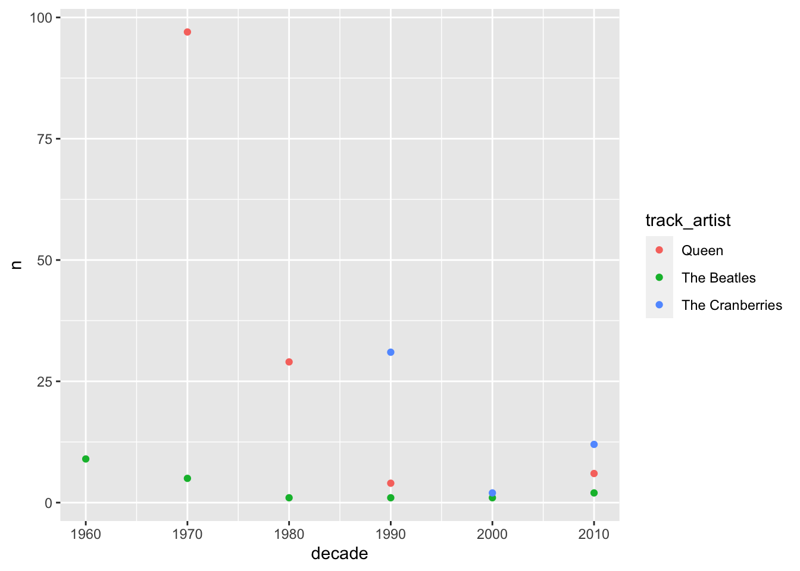
To make tendencies clearer, we can add geom_line to our plot. We need a new aesthetics for the lines to connect the right points, called group. In this case, group takes the same variable as the color mapping.
spotify_tc_tv_q %>%
count(track_artist, decade) %>%
ggplot(aes(x = decade, y = n, color = track_artist)) +
geom_point() +
geom_line(aes(group = track_artist))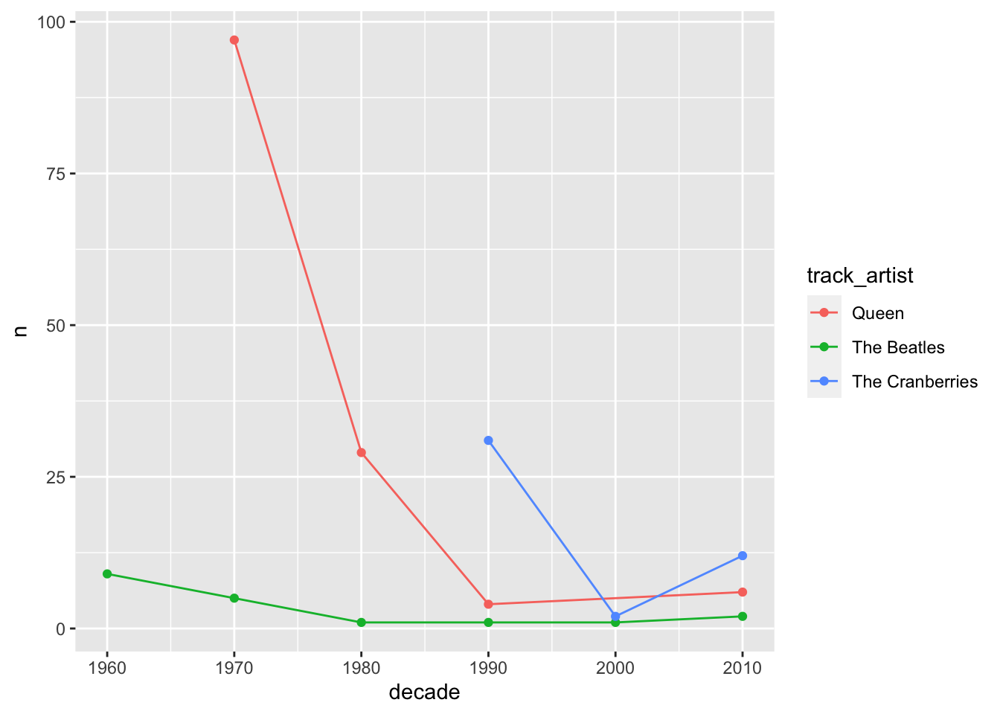
From the plot above, what can we conclude about the selected artists? When did they start releasing songs?
Let’s look at track_popularity by artist across decade. For this, we need group_by and summarise before we can build our plot.
spotify_tc_tv_q %>%
group_by(track_artist, decade) %>%
summarise(mean_popularity = mean(track_popularity)) %>%
ggplot(aes(x = decade, y = mean_popularity, color = track_artist)) +
geom_point() +
geom_line(aes(group = track_artist))## `summarise()` regrouping output by 'track_artist' (override with `.groups` argument)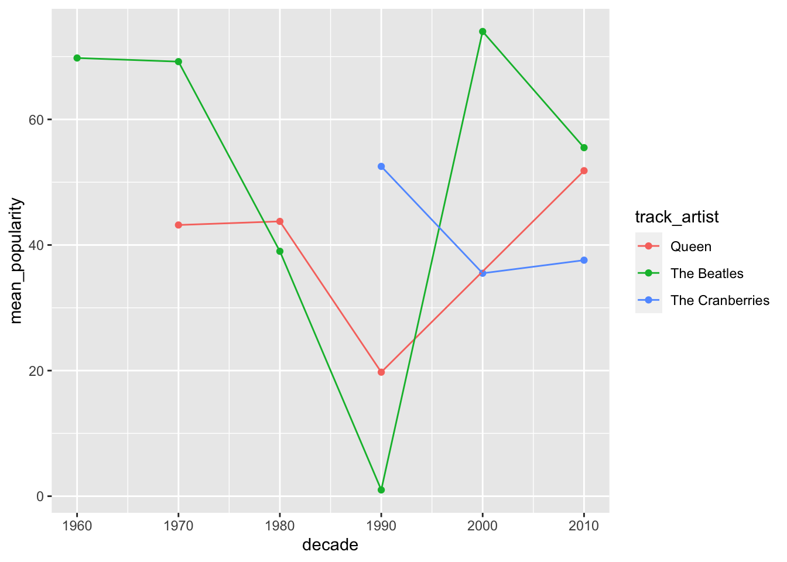
How would this plot look like as a bar plot?
spotify_tc_tv_q %>%
group_by(track_artist, decade) %>%
summarise(mean_popularity = mean(track_popularity)) %>%
ggplot(aes(x = decade, y = mean_popularity, fill = track_artist)) +
geom_col(position = "dodge")## `summarise()` regrouping output by 'track_artist' (override with `.groups` argument)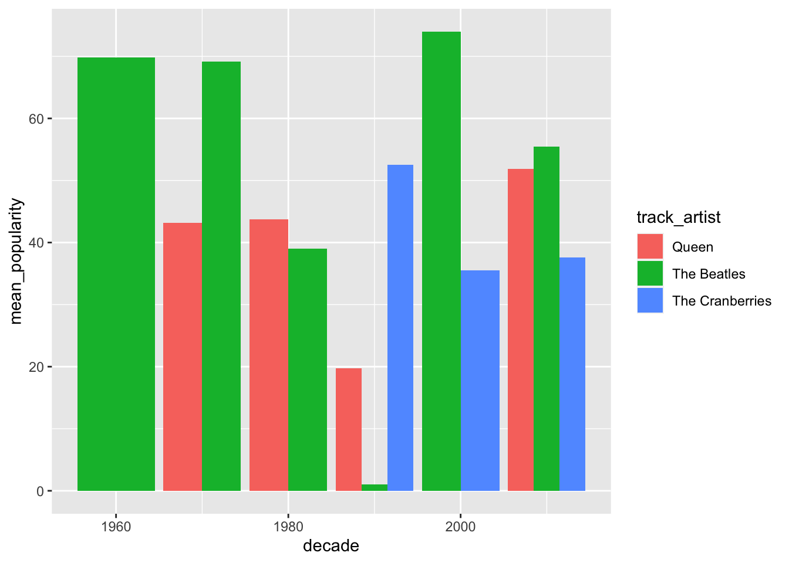
Which chart do you think is easier to read? Why?
We have multiple songs per artists, so we can include standard deviation in our summarise.
spotify_tc_tv_q %>%
group_by(track_artist, decade) %>%
summarise(n = n(),
mean_popularity = mean(track_popularity),
sd_popularity = sd(track_popularity))## `summarise()` regrouping output by 'track_artist' (override with `.groups` argument)## # A tibble: 13 x 5
## # Groups: track_artist [3]
## track_artist decade n mean_popularity sd_popularity
## <chr> <dbl> <int> <dbl> <dbl>
## 1 Queen 1970 97 43.2 15.1
## 2 Queen 1980 29 43.8 22.5
## 3 Queen 1990 4 19.8 27.6
## 4 Queen 2010 6 51.8 11.7
## 5 The Beatles 1960 9 69.8 6.53
## 6 The Beatles 1970 5 69.2 5.89
## 7 The Beatles 1980 1 39 NA
## 8 The Beatles 1990 1 1 NA
## 9 The Beatles 2000 1 74 NA
## 10 The Beatles 2010 2 55.5 4.95
## 11 The Cranberries 1990 31 52.5 13.3
## 12 The Cranberries 2000 2 35.5 3.54
## 13 The Cranberries 2010 12 37.6 12.3NAs in our data frame is a problem. We can add mutate with replace_na to replace these NAs with zero.
spotify_tc_tv_q %>%
group_by(track_artist, decade) %>%
summarise(n = n(),
mean_popularity = mean(track_popularity),
sd_popularity = sd(track_popularity)) %>%
mutate(sd_popularity = replace_na(sd_popularity, 0))## `summarise()` regrouping output by 'track_artist' (override with `.groups` argument)## # A tibble: 13 x 5
## # Groups: track_artist [3]
## track_artist decade n mean_popularity sd_popularity
## <chr> <dbl> <int> <dbl> <dbl>
## 1 Queen 1970 97 43.2 15.1
## 2 Queen 1980 29 43.8 22.5
## 3 Queen 1990 4 19.8 27.6
## 4 Queen 2010 6 51.8 11.7
## 5 The Beatles 1960 9 69.8 6.53
## 6 The Beatles 1970 5 69.2 5.89
## 7 The Beatles 1980 1 39 0
## 8 The Beatles 1990 1 1 0
## 9 The Beatles 2000 1 74 0
## 10 The Beatles 2010 2 55.5 4.95
## 11 The Cranberries 1990 31 52.5 13.3
## 12 The Cranberries 2000 2 35.5 3.54
## 13 The Cranberries 2010 12 37.6 12.3The data frame looks good, let’s add the plot code lines to the block of code above. This time, let’s do a bar chart faceted by track_artist.
spotify_tc_tv_q %>%
group_by(track_artist, decade) %>%
summarise(n = n(),
mean_popularity = mean(track_popularity),
sd_popularity = sd(track_popularity)) %>%
mutate(sd_popularity = replace_na(sd_popularity, 0),
lower = mean_popularity - sd_popularity,
upper = mean_popularity + sd_popularity) %>%
ggplot(aes(x = decade, y = mean_popularity, fill = track_artist)) +
geom_col() +
facet_wrap(~track_artist)## `summarise()` regrouping output by 'track_artist' (override with `.groups` argument)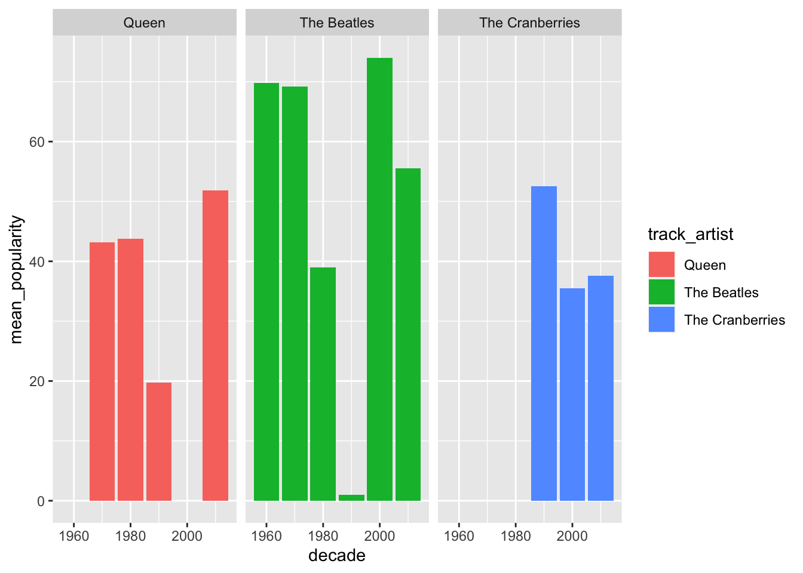
It looks the same as before. Let’s add geom_errorbar to it with ymin and ymax mappings. For that, we need to transform our data frame with mutate to calculate lower and upper variables, which represent the mean minus the standard deviation for the lower value of the range, and mean plus standard deviation for the upper value of the range.
spotify_tc_tv_q %>%
group_by(track_artist, decade) %>%
summarise(n = n(),
mean_popularity = mean(track_popularity),
sd_popularity = sd(track_popularity)) %>%
mutate(sd_popularity = replace_na(sd_popularity, 0),
lower = mean_popularity - sd_popularity,
upper = mean_popularity + sd_popularity) ## `summarise()` regrouping output by 'track_artist' (override with `.groups` argument)## # A tibble: 13 x 7
## # Groups: track_artist [3]
## track_artist decade n mean_popularity sd_popularity lower upper
## <chr> <dbl> <int> <dbl> <dbl> <dbl> <dbl>
## 1 Queen 1970 97 43.2 15.1 28.0 58.3
## 2 Queen 1980 29 43.8 22.5 21.3 66.2
## 3 Queen 1990 4 19.8 27.6 -7.83 47.3
## 4 Queen 2010 6 51.8 11.7 40.2 63.5
## 5 The Beatles 1960 9 69.8 6.53 63.2 76.3
## 6 The Beatles 1970 5 69.2 5.89 63.3 75.1
## 7 The Beatles 1980 1 39 0 39 39
## 8 The Beatles 1990 1 1 0 1 1
## 9 The Beatles 2000 1 74 0 74 74
## 10 The Beatles 2010 2 55.5 4.95 50.6 60.4
## 11 The Cranberries 1990 31 52.5 13.3 39.2 65.8
## 12 The Cranberries 2000 2 35.5 3.54 32.0 39.0
## 13 The Cranberries 2010 12 37.6 12.3 25.2 49.9Now we can use geom_errorbar.
spotify_tc_tv_q %>%
group_by(track_artist, decade) %>%
summarise(n = n(),
mean_popularity = mean(track_popularity),
sd_popularity = sd(track_popularity)) %>%
mutate(sd_popularity = replace_na(sd_popularity, 0),
lower = mean_popularity - sd_popularity,
upper = mean_popularity + sd_popularity) %>%
ggplot(aes(x = decade, y = mean_popularity, fill = track_artist)) +
geom_col() +
geom_errorbar(aes(ymin = lower, ymax = upper)) +
facet_wrap(~track_artist)## `summarise()` regrouping output by 'track_artist' (override with `.groups` argument)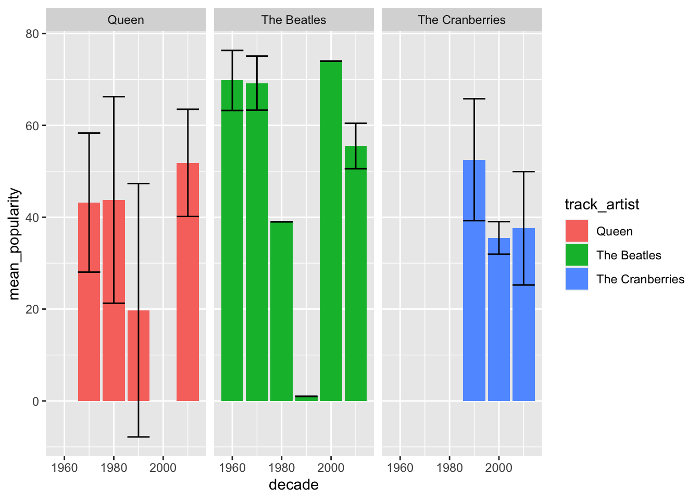
We can do a similar chart but look at the 2010 decade only.
spotify_tc_tv_q %>%
filter(decade == 2010) %>%
group_by(track_artist, decade) %>%
summarise(n = n(),
mean_popularity = mean(track_popularity),
sd_popularity = sd(track_popularity)) %>%
mutate(sd_popularity = replace_na(sd_popularity, 0),
lower = mean_popularity - sd_popularity,
upper = mean_popularity + sd_popularity) %>%
ggplot(aes(x = track_artist, y = mean_popularity, fill = track_artist)) +
geom_col() +
geom_errorbar(aes(ymin = lower, ymax = upper)) +
facet_wrap(~decade)## `summarise()` regrouping output by 'track_artist' (override with `.groups` argument)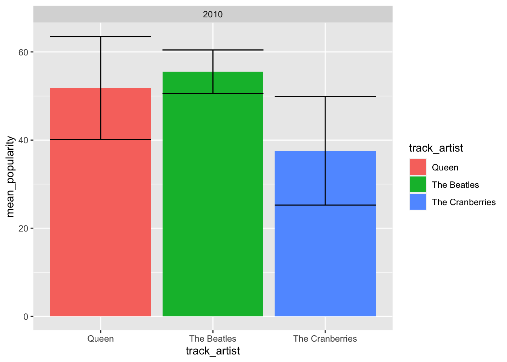
We can also collapse decade, and just look at popularity overall.
spotify_tc_tv_q %>%
group_by(track_artist) %>%
summarise(n = n(),
mean_popularity = mean(track_popularity),
sd_popularity = sd(track_popularity)) %>%
mutate(sd_popularity = replace_na(sd_popularity, 0),
lower = mean_popularity - sd_popularity,
upper = mean_popularity + sd_popularity) %>%
ggplot(aes(x = track_artist, y = mean_popularity, fill = track_artist)) +
geom_col() +
geom_errorbar(aes(ymin = lower, ymax = upper)) ## `summarise()` ungrouping output (override with `.groups` argument)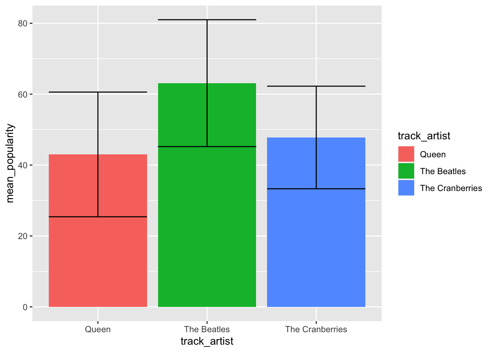
9.2 Data Viz by Album
QUESTION: Which Drake album is the most popular?
Let’s review the steps to answer our question:
Create a new data frame that is a subset of our original data frame
Summarize and transform our new data frame to create the variables we need to plot the info we need
Try different plots until we find a plot that looks clear
9.2.1 Create new data frame
We first filter our data frame by artist.
# filter original data frame to create new data frame with selected artists
spotify_drake <- spotify_songs %>%
filter(track_artist == 'Drake')
# inspect new data frame
glimpse(spotify_drake)## Rows: 100
## Columns: 25
## $ track_id <chr> "76P07ei8drjrenqtvDbefy", "1xznGGDReH1oQq0xz…
## $ track_name <chr> "Hotline Bling", "One Dance", "Too Good", "B…
## $ track_artist <chr> "Drake", "Drake", "Drake", "Drake", "Drake",…
## $ track_popularity <dbl> 0, 20, 12, 72, 12, 10, 83, 83, 86, 68, 15, 7…
## $ track_album_id <chr> "2e42oY2oFArkkTENT8UVXD", "3hARKC8cinq3mZLLA…
## $ track_album_name <chr> "Views", "Views", "Views", "Thank Me Later (…
## $ track_album_release_date <chr> "2016-05-06", "2016-05-06", "2016-05-06", "2…
## $ playlist_name <chr> "BALLARE - رقص", "Electropop Hits 2017-2020…
## $ playlist_id <chr> "1CMvQ4Yr5DlYvYzI0Vc2UE", "7kyvBmlc1uSqsTL0E…
## $ playlist_genre <chr> "pop", "pop", "pop", "pop", "pop", "pop", "p…
## $ playlist_subgenre <chr> "post-teen pop", "electropop", "electropop",…
## $ danceability <dbl> 0.905, 0.791, 0.804, 0.431, 0.771, 0.893, 0.…
## $ energy <dbl> 0.617, 0.619, 0.648, 0.894, 0.629, 0.639, 0.…
## $ key <dbl> 2, 1, 7, 5, 1, 2, 1, 1, 7, 1, 11, 10, 2, 1, …
## $ loudness <dbl> -8.039, -5.886, -7.805, -2.673, -5.790, -7.8…
## $ mode <dbl> 1, 1, 1, 0, 1, 1, 1, 1, 1, 1, 1, 0, 1, 1, 1,…
## $ speechiness <dbl> 0.0596, 0.0532, 0.1170, 0.3300, 0.0511, 0.05…
## $ acousticness <dbl> 0.00287, 0.00784, 0.05730, 0.09510, 0.00802,…
## $ instrumentalness <dbl> 4.40e-04, 4.23e-03, 3.49e-05, 0.00e+00, 2.52…
## $ liveness <dbl> 0.0484, 0.3510, 0.1020, 0.1880, 0.3560, 0.03…
## $ valence <dbl> 0.572, 0.371, 0.392, 0.604, 0.362, 0.579, 0.…
## $ tempo <dbl> 134.972, 103.989, 117.983, 162.193, 103.918,…
## $ duration_ms <dbl> 267187, 173987, 263373, 258760, 173975, 2670…
## $ release_year <dbl> 2016, 2016, 2016, 2010, 2016, 2015, 2016, 20…
## $ decade <dbl> 2010, 2010, 2010, 2010, 2010, 2010, 2010, 20…What albums are there in this new data frame?
## # A tibble: 27 x 2
## track_album_name n
## <chr> <int>
## 1 Views 23
## 2 Scorpion 16
## 3 More Life 9
## 4 The Best In The World Pack 7
## 5 Take Care (Deluxe) 5
## 6 What A Time To Be Alive 5
## 7 If You're Reading This It's Too Late 4
## 8 Care Package 3
## 9 Hotline Bling 3
## 10 Top Boy (A Selection of Music Inspired by the Series) 3
## # … with 17 more rows9.2.2 Summarize data
Now we summarize our data for mean popularity per album.
spotify_drake %>%
group_by(track_album_name) %>%
summarise(mean_popularity = mean(track_popularity))## `summarise()` ungrouping output (override with `.groups` argument)## # A tibble: 27 x 2
## track_album_name mean_popularity
## <chr> <dbl>
## 1 0 To 100 / The Catch Up 5
## 2 Back To Back 69
## 3 Behind Barz (Bonus) 74
## 4 Care Package 61.3
## 5 Fake Love 6
## 6 Forever 2
## 7 Hold On, We're Going Home 1
## 8 Hotline Bling 9.67
## 9 If You're Reading This It's Too Late 18
## 10 More Life 47.9
## # … with 17 more rows9.2.3 Plot summarized data
We now add the ggplot code lines to our summarized data frame.
spotify_drake %>%
group_by(track_album_name) %>%
summarise(mean_popularity = mean(track_popularity)) %>%
ggplot(aes(y = track_album_name, x = mean_popularity)) +
geom_col()## `summarise()` ungrouping output (override with `.groups` argument)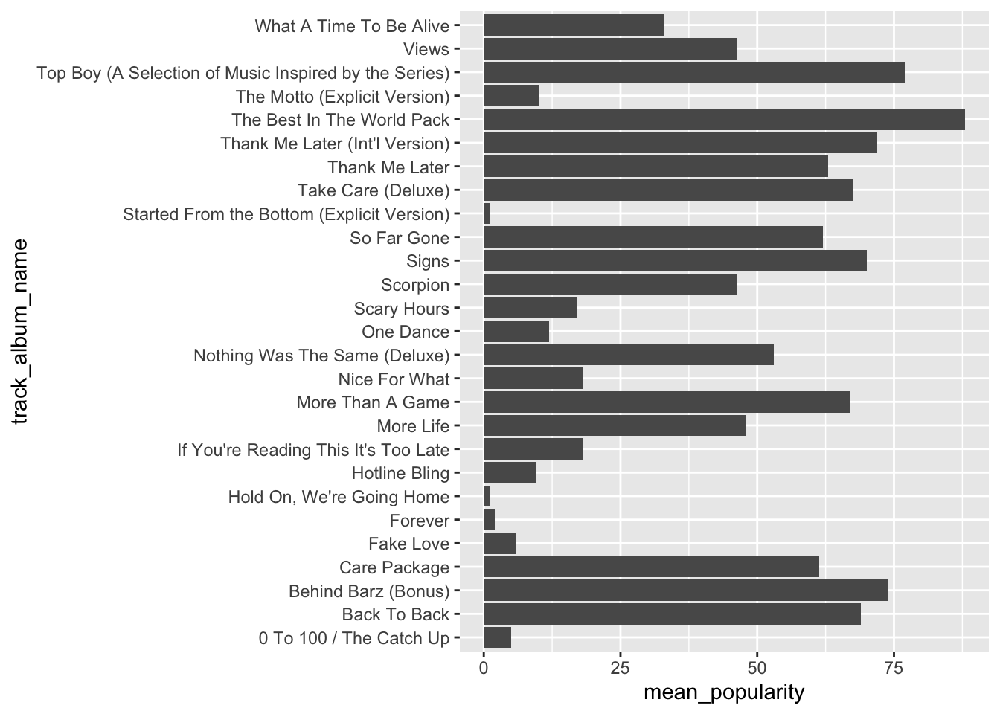
Let’s order the songs by mean_popularity.
spotify_drake %>%
group_by(track_album_name) %>%
summarise(mean_popularity = mean(track_popularity)) %>%
ggplot(aes(y = reorder(track_album_name, mean_popularity), x = mean_popularity)) +
geom_col()## `summarise()` ungrouping output (override with `.groups` argument)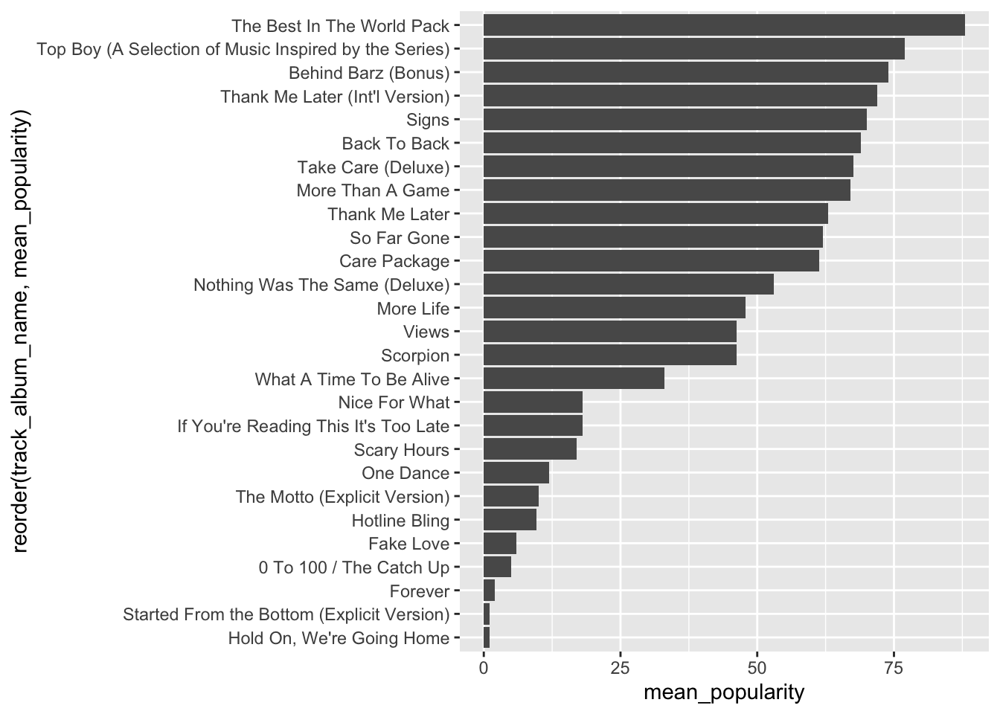
We can add labels to the bars, with the mean_popularity for each album using geom_label. A new mapping is needed for label, which is the same as the x mapping in this case.
spotify_drake %>%
group_by(track_album_name) %>%
summarise(mean_popularity = mean(track_popularity)) %>%
ggplot(aes(y = reorder(track_album_name, mean_popularity), x = mean_popularity)) +
geom_col() +
geom_label(aes(label = mean_popularity))## `summarise()` ungrouping output (override with `.groups` argument)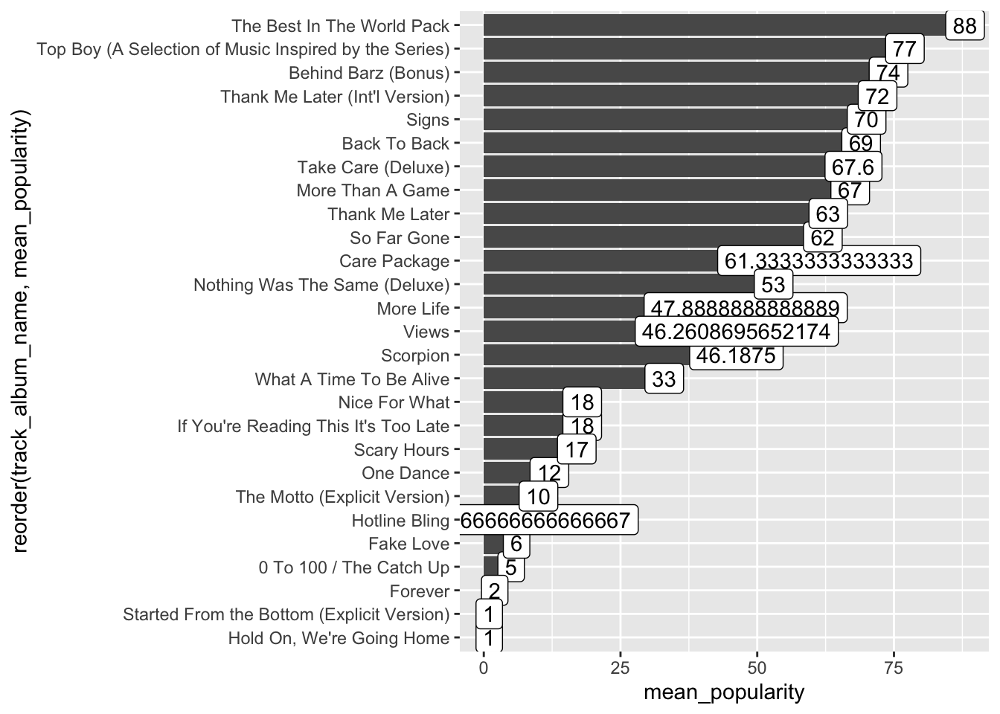
We need to clean up the means. We can do that using format.
spotify_drake %>%
group_by(track_album_name) %>%
summarise(mean_popularity = mean(track_popularity)) %>%
ggplot(aes(y = reorder(track_album_name, mean_popularity), x = mean_popularity)) +
geom_col() +
geom_label(aes(label = format(mean_popularity, digits = 1)))## `summarise()` ungrouping output (override with `.groups` argument)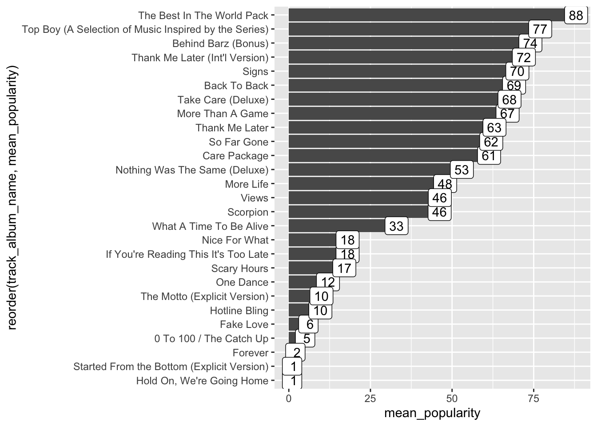
We can clean up our chart even more.
spotify_drake %>%
group_by(track_album_name) %>%
summarise(mean_popularity = mean(track_popularity)) %>%
ggplot(aes(y = reorder(track_album_name, mean_popularity), x = mean_popularity)) +
geom_col() +
geom_label(aes(label = format(mean_popularity, digits = 1))) +
xlab("mean popularity") +
ylab("") +
theme_bw() +
ggtitle("Albums by Drake")## `summarise()` ungrouping output (override with `.groups` argument)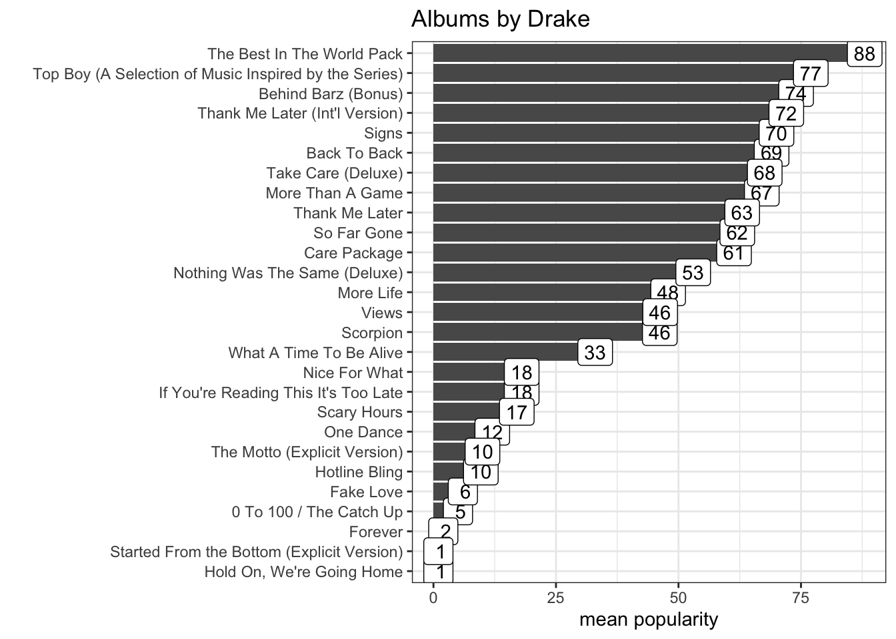
9.3 DATA CHALLENGE 04
Accept data challenge 04 assignment